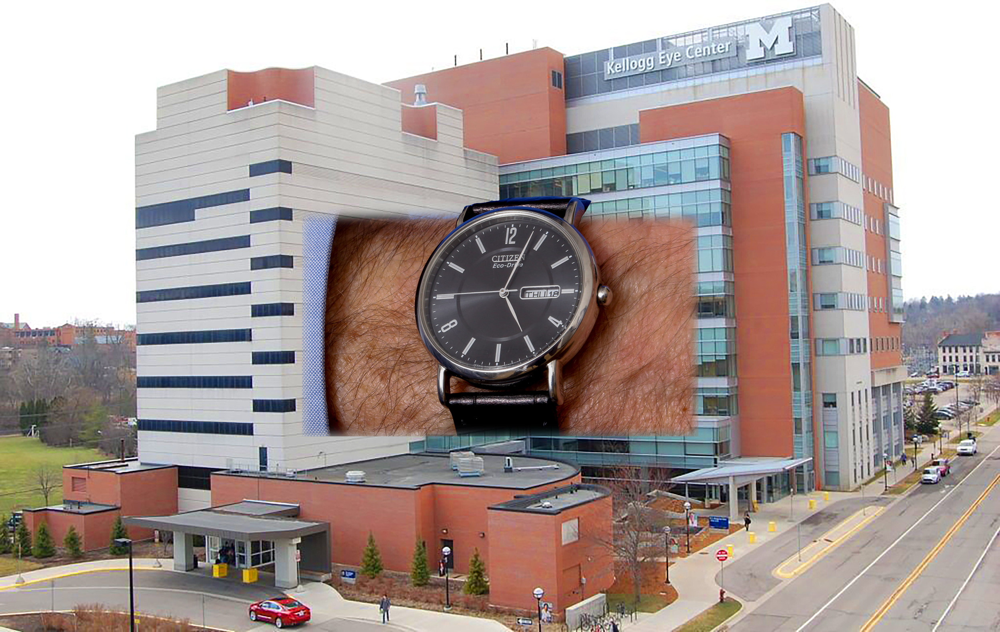

Visual Hallucinations

- Visual sensations not based on viewed objects; generated by endogenous neural activity
-
Mechanisms
- Irritation of outer retina
- Irritation of optic nerve
- Irritation of vision-related cerebral cortex
- Deafferentation of vision-related cerebral cortex (release hallucinations)
- Common causes of irritation of outer retina: vitreous or retinal detachment, photoreceptor dysfunction
- Common causes of irritation of optic nerve: optic neuritis, ischemic optic neuropathy
- Common causes of irritation of vision-related cerebral cortex: migraine, ischemia, tumor
- Common cause of deafferentation of vision-related cerebral cortex: blindness of any cause (Charles Bonnet Syndrome)
- Brief flashes = vitreoretinal tug Vitreous Detachment
- Stationary sparkles, flickers, scintillations = irritation of photoreceptors or vision-related cortex
- Stationary multicolored flickers = irritation of visual cortex by seizure
- Perseveration of previously viewed object, now superimposed on newly viewed scene [“palinopsia”] = irritation of vision-related cerebral cortex
- Sparkles that traverse hemifield = irritation of vision-related cerebral cortex by migraine Migraine
- Geometric shapes = irritation of vision-related cerebral cortex by migraine, infarction, seizure
- Complex patterns or figures = irritation of vision-related cerebral cortex by migraine, infarction, seizure; deafferentation of vision-related cerebral cortex by blindness (Charles Bonnet syndrome), schizophrenia, psychotropic medications, recreational drugs, Lewy body dementia
- Flickering black and white dots or lines that obscure view (“visual snow”) = visual hypersensitivity of anxiety state, rarely photoreceptor dysfunction


- • Illusions, which are distortions of viewed objects (See Visual Illusions)
- Episodic flashes = vitreoretinal interface (vitreous tug or detachment, retinal hole or detachment)
- Persistent monocular flickers = outer retinal lesion in one eye
- Flickers traversing hemifield in 20-30 minutes = migraine
- Episodic stationary hemianopic flickers = transient ischemic attack, seizure, tumor of vision-related cerebral cortex
- Persistent stationary hemianopic flickers = vision-related cerebral cortex stroke, seizure, tumor, status migrainosus
- Colored stationary flickers = cerebral cortex seizure, tumor
- Visual perseveration [palinopsia] = vision-related cerebral cortex lesion
- Formed hemianopic hallucinations = vision-related cerebral cortex lesion
- Formed hallucinations covering entire visual field = toxic medication or recreational drug use, anxiety or psychosis
- Formed hallucinations in blind patient = Charles Bonnet syndrome
- Visual snow = anxiety state, photoreceptor dysfunction
- Retinal or vitreous detachment = prompt surgical repair
- Migraine = reassurance, prophylaxis
- Vision-related cerebral cortex lesion = brain imaging, electroencephalography, other appropriate evaluation and treatment
- Medications, recreational drugs, and psychosis = appropriate identification and treatment
- Charles Bonnet syndrome = reassurance, psychotropic medication
- Visual snow = rule out outer retinal lesion, address underlying anxiety state